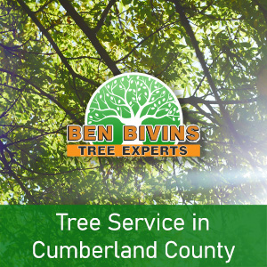

The Benefits of Expert Tree Trimming and Pruning
There are a wide variety of benefits that tree trimming and pruning services provide.
- Enhances tree health by removing dead or diseased branches. This prevents the spread of decay and disease within the tree.
- Improves Safety by eliminating weak or dead limbs that could fall and cause injury or property damage, especially during severe weather.
- Trimming encourages proper growth. Proper pruning techniques guide the growth of the tree, promoting a strong structure and desirable form.
- Pruning increases sunlight and air circulation. Thinning a tree’s canopy allows for better air flow and sunlight penetration. This benefits the tree’s overall health and the growth of underplantings.
- Caring for fruit trees boosts their production. For fruit-bearing trees, regular pruning can improve the size and quantity of the crop.
- Trimmed and pruned trees look better, contributing to the overall beauty of the landscape and potentially increasing property value.
- Trimming and pruning keeps branches from growing into power lines, buildings, and other structures, reducing the risk of damage and costly repairs.
- Regular trimming by certified tree experts allows for the early identification of issues like diseases or pest infestations, enabling timely intervention.
Other Tree Services We Provide in Cumberland County
In addition to the important service of trimming and pruning, Ben Bivins Tree Experts offer many other tree services in Cumberland County. Our skilled employees safely and efficiently remove problem trees from properties. When you have a tree that is causing either safety or another issue in your yard, we can get rid of it in a professional manner. Furthermore, we can either leave the remaining wood for your use (as long as the tree is not infested with pests or diseased) or remove all of the debris. Another service related to tree removal is stump grinding which completely eliminates unsightly and dangerous stumps. For Cumberland County residents, another important service we offer is emergency tree service. Storms can be violent in Cumberland County and often destroy residential trees causing major damage to properties. For quick removal of broken, downed, or uprooted trees, contact us right away.
Contact Ben Bivins Tree Experts for All Your Camden County Tree Service Needs
Whatever it is that your trees need, we can handle it! From trimming and pruning to crown reduction and stump grinding, if it has to do with trees, our crew will complete the job with professionalism while following safety guidelines. Plus, we are fully licensed and insured which is a crucial detail when it comes to tree service. Feel free to fill out our contact form or reach us through our social media accounts anytime. We look forward to hearing from you!